|
| Perfect
Dark Version Beta : Facemapping |
| Merci
aux Magazines suivants pour les Photos - Nintendojo, Nintendo Power,
PDCentral, N64 Magazine Toutes
les Images sont des vraies trouvées avec le Gameshark. En fait,
ces Codes ne font qu'afficher les Messages qui auraient du apparaitre
dans ce Fameux Menu qui devait permettre aux Joueurs de prendre une
Photo de leur Tête avec la Gameboy Camera, puis de la placer
sur un Personnage Multiplayer du Jeu ! |

Cet Ecran ci-dessus de chez IGN montre le Menu Beta de Perfect Dark. Sur la Gauche se trouve le Menu Perfect Head, et sur la Droite le Menu Inventory. Remarquez égalemment que les Menus Face-Mapping et Cooperative / Contre-Operaitve sont là en meme temps. Ceci prouve qu'on pouvait avoir les 2, et que Rare mentait en prétendant qu'on ne pouvait avoir qu'un seul des Deux. Pour savoir pourquoi Rare a REELEMENT retiré le Face-Mapping, rendez-vous aux Mysteres. L'Image ci-dessous montre l'Ecran des Options, rebaptisé plus tard Inventory. Notez égalemment le "Save Game" en bas. |
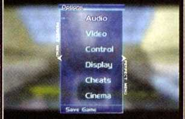 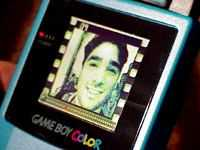 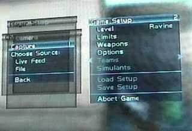
Le Joueur devait scanner son Visage avec le GameBoy
Camera...
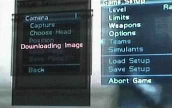 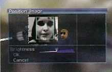 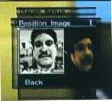 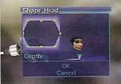 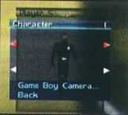 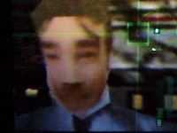 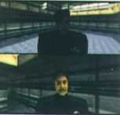


Voici maintenant les Messages disponibles avec le Gameshark ! En utilisant ce Code, les Trucs suivant s'affichent à l'Ecran comme par Magie !! Code - 8009EDF8-00XX (XX = entre 01 et 10, pour les Différents Messages) en Basse Résolution. Voilà les Photos prouvant que tout n'a pas disparu de la Cartouche... Ca laisse reveur... |
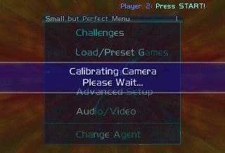 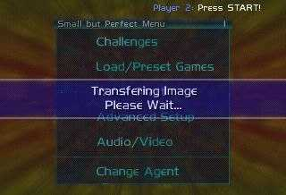 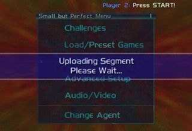 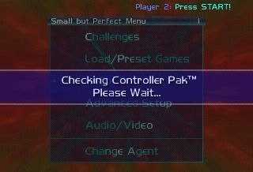 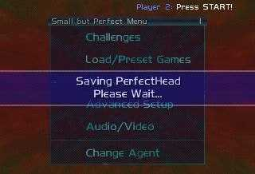